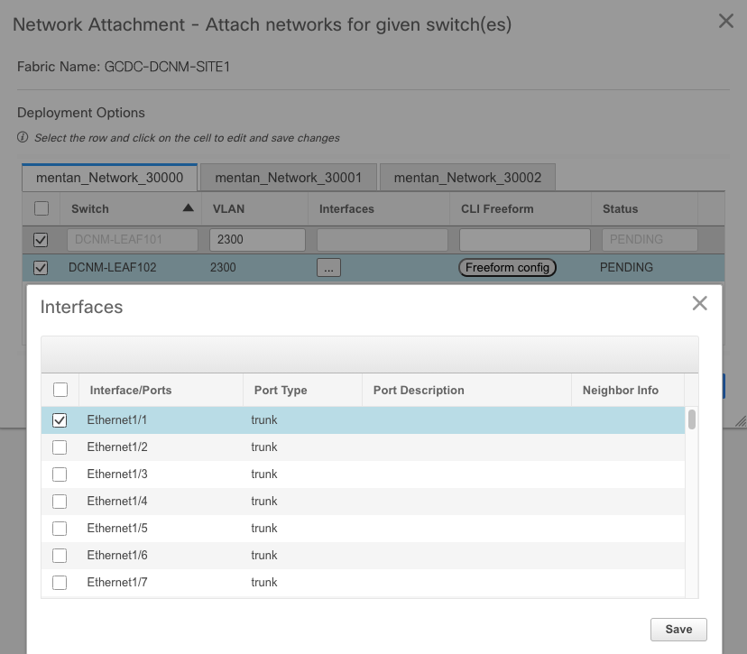

DCNM 设置
部署Fabric
DCNM使用根据最佳实践优化的template来简化网络的创建和管理。 在DCNM中提供了三种template来完成不同的功能，包括
- Policy Template （网络策略）
- Fabric Template （Fabric开局）
- Profile Template（overlay配置）
在Fabric开局部分，针对VXLAN EVPN和传统IP网络两种部署模式，DCNM提供了几种常用的部署模板
LAN Fabric模式：（VXLAN EVPN, Nexus 3K/9K）
- Easy Fabric template
LAN Classic模式：（IP Network, Nexus 2K/3K/5K/7K/9K）
- LAN Classic template
- External Fabric template
Note: monitor mode 在LAN Classic template中选择，即使目标网络是VXLAN EVPN网络。
在DCNM中部署fabric的基本步骤如下：
- 根据template创建Fabric
- 在创建的Fabric中添加交换机
- 将配置模板的underlay配置下发到交换机中
- 配置overlay VRF, Network配置
- 配置server port接口配置
下面针对不同部署模式进行演示
1. Managed VXLAN EVPN Fabric
- Underlay 部署
Underlay 部署的基本流程如下：
进入Control - Fabrics - Fabric Builder, 点击 Create Fabric
输入Fabric名字，选择模板Easy_Fabric_11_1，输入必要参数（预设参数通常为最佳实践推荐值，可以不用改变）
开启PTP功能用于telemetry
设置DNS, NTP, SYSLOG
设置定期备份交换机配置，并保存
在新创建的Fabric中添加交换机
输入种子交换机的OOB地址和用户名密码信息，如果想删除所有交换机现有配置，将 preserve config 选 no，点击 Start discovery 开始
在发现的交换机中选择加入fabric的交换机，点击 Import into fabric, 导入完成后，点击 close
在发现的交换机中设置正确的 role，
点击右上角的 Save & Deploy， 将模板配置下发到交换机，同时交换机将重启以应用新的配置 (此处需等待十多分钟, 善用Tabular view...)
DCNM自动生成所有交换机的配置，点击 Preview Config 检查具体配置内容， 无误后点击 Deploy Config 将配置部署到交换机
至此underlay已经部署完成，下面进入Overlay的部署
- Overlay 部署
Overlay 部署的基本流程如下：
选择 Control - Fabrics - VRFs，创建新的VRF (租户)
输入 VRF 参数, 创建 VRF
选择 Control - Fabrics - Networks, 创建 Network （VLAN）
创建 Network (VLAN, SVI)
选择创建的network，并将这些network部署到交换机上

点击 Deploy 部署
部署完成后，可以通过交换机上CLI检查配置下发的结果
- VM 接入 DCNM Fabric
在vCenter中创建DVS, 将host加入DVS
创建port-group，VLAN和overlay network的VLAN一一对应
在VM的network setting中选择创建的port-group，VM可以ping通网关，接入fabric